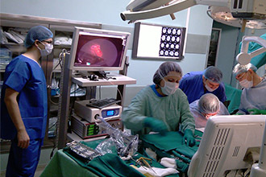

- 
-
Сегодня
Сегодня ФГУП «ГНЦ «НИОПИК» – это современный научный центр, объединяющий Научно-исследовательский институт, Проектную часть и Опытный завод. Все достижения института базируются на фундаментальных научных результатах, полученных учеными НИОПИКа, и имеют большую социальную значимость.
-
Производство
Опытный завод ФГУП «ГНЦ «НИОПИК» в г. Долгопрудном производит продукцию, разработанную сотрудниками Научно-исследовательского института. В его номенклатуру входят: дезинфицирующие средства, строительные антисептики, фармацевтические препараты, биологически активные добавки (БАД), катализатор окисления монооксида углерода, красители, фоторезисты, оксиэтилированные продукты и изделия на основе сублимационной термопечати (флаги, вымпелы, сувенирная продукция).
-
Продажи
ООО "ТД "Новохим" город Томск - отдел продаж дезинфицирующих средств и антисептиков произведенных ФГУП "ГНЦ "НИОПИК"
- Обладают полным спектром антимикробного действия (бактерии, вирусы, грибы, споры).
- Не повреждают обрабатываемые изделия медицинского назначения.
- Гарантируют полную безопасность для здоровья персонала и пациентов при рекомендуемых режимах работы.
- Удобны в использовании: дозированная крышечка, препараты хорошо смешиваются с водой, имеются тест-полоски.
- Все препараты имеют Свидетельства о государственной регистрации и Сертификаты соответствия.
ФГУП «ГНЦ «НИОПИК» более 15 лет назад одним из первых разработал и предложил рынку безхлорное дезинфицирующее средство АЛАМИНОЛ®, которое по сей день входит в тройку самых востребованных препаратов в медицинских учреждениях.
ФГУП «ГНЦ «НИОПИК» в настоящее время является одним из крупнейших в России разработчиков и производителей дезинфицирующих средств на основе различных по химической природе действующих веществ, ассортимент которых, насчитывающий свыше 10 наименований, постоянно расширяется и совершенствуется. Производство дезинфицирующих средств осуществляется на Опытном заводе, который обеспечивает поставки для нужд лечебно-профилактических учреждений, предприятий коммунально-бытового обслуживания, общественного питания и торговли, учреждений культуры, отдыха, спорта, социального обеспечения в г. Москве и других регионах России. Дезинфицирующие средства защищены 8 патентами РФ.
Перечень дезсредств: Аламинол®, Аламинол® Плюс, Акваминол®, Акваминол® Форте, Альпинол®, Бианол®, Макси-Дез, Макси-Дез М, АДС-521, Макси-Стерил, Макси-Септ Аква.
Производство строительного антисептика «Картоцид-компаунд»

Комплексный препарат «Картоцид-компаунд» сочетает бактерицидные, инсектицидные и альгицидные функции, которые обеспечиваются высокоэффективными специализированными добавками, совмещенными в устойчивую единую водную систему.
Антисептик «Картоцид-компаунд» предназначен для защиты и лечения как древесины, так и минеральных искусственных строительных материалов (бетона, штукатурки, гипсокартона, кирпича и других) или строительных материалов из природного камня, лакокрасочных покрытий от биокоррозии, вызываемой грибами, бактериями и другими микроорганизмами, а также насекомыми. Производство «Картоцид-компаунда» налажено на Опытном заводе ФГУП «ГНЦ «НИОПИК».
Препарат «Картоцид-компаунд» имеет сертификат соответствия Госстандарта России № РОСС RU.АЕ95.Н01531 и санитарно-эпидемиологическое заключение № 77.99.34.238.Д.007062.07.08.
Антисептик «Картоцид-компаунд» для камня и дерева сегодня востребован организациями занимающимися строительством, капитальным ремонтом и реставрацией зданий, сооружений и памятников архитектуры, лесозаготовительными организациями. Незаменим «Картоцид-компаунд» для проведения ремонта в квартире, загородных каменных и деревянных домах.